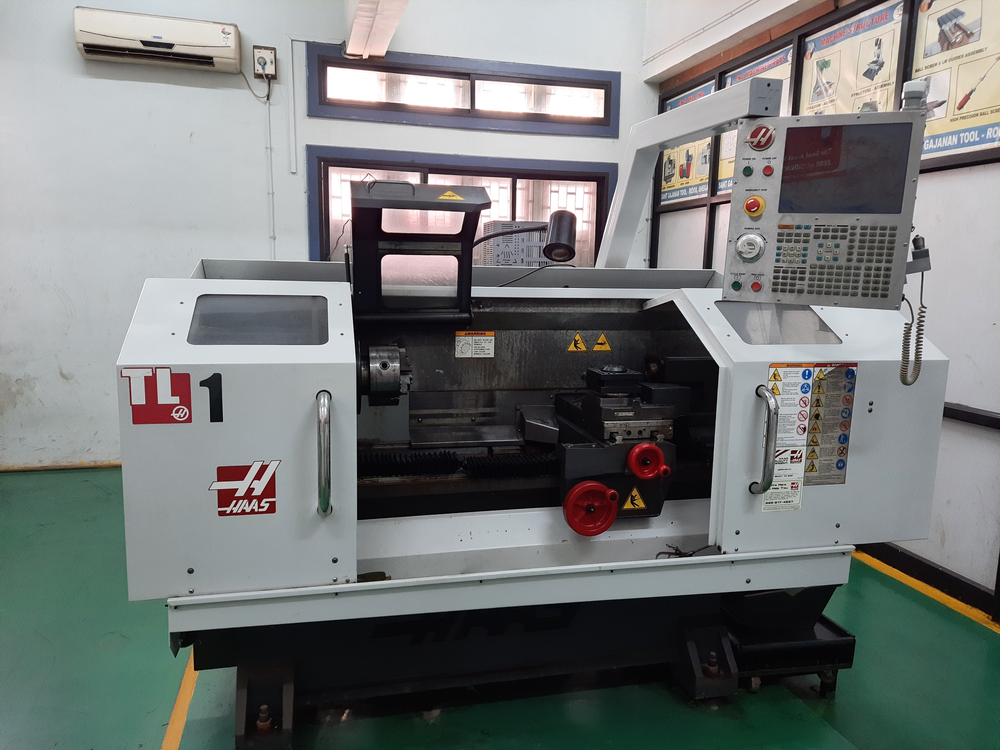
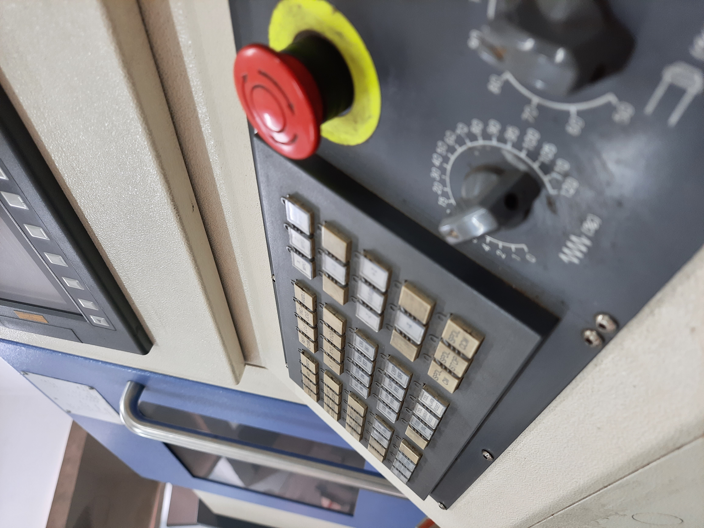
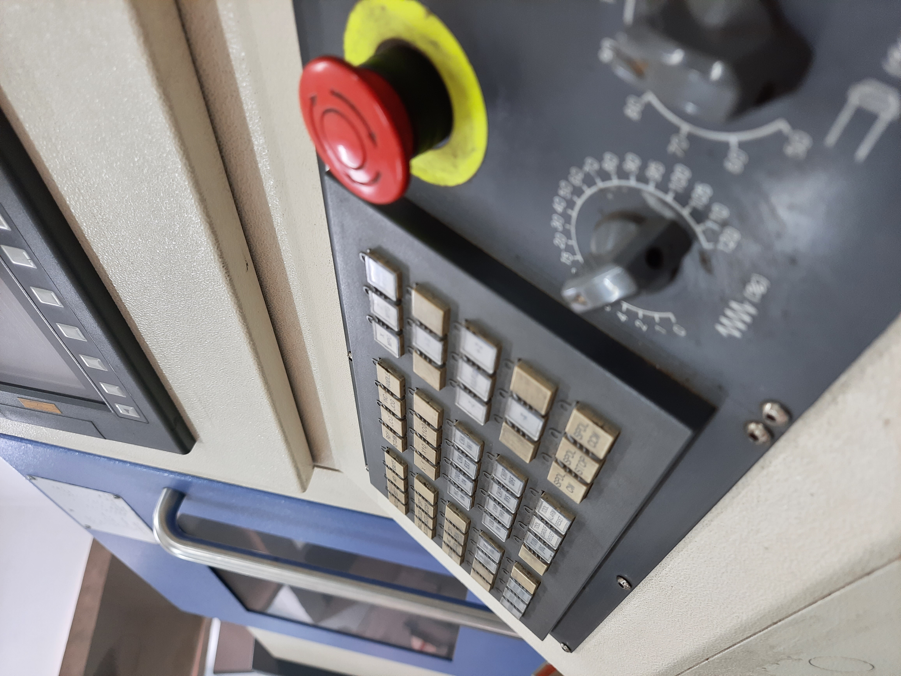
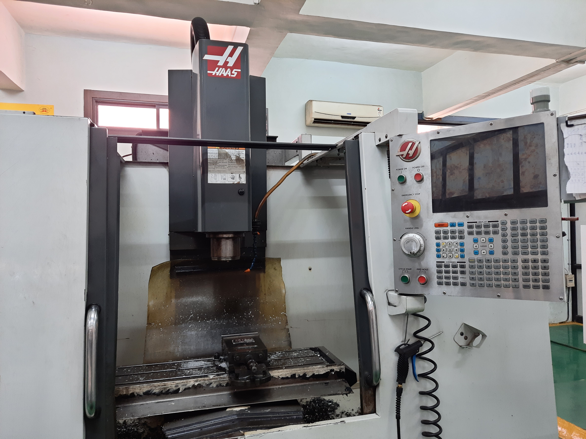

Welcome To The CNC Learning Page
What is a CNC Machine?
A CNC machine is a computer-controlled manufacturing tool that can be used to create intricate and precise
parts from various materials such as wood, metal, plastic, and more. The machine operates based
on digital instructions (G-code) that control the movement of the machine's cutting or shaping tools.
Types of CNC Machines for a Fab Lab:
CNC Router: A CNC router is commonly used for cutting, engraving, and carving in materials like wood,
plastic, and foam. It's ideal for creating 2D and 3D designs.
CNC Milling Machine: CNC milling machines are used for more precise and complex machining operations.
They're capable of creating detailed parts with high accuracy from various materials.
CNC Laser Cutter/Engraver: This machine uses a high-powered laser beam to cut or engrave materials like
wood, acrylic, fabric, and even metal. It's great for creating intricate designs and prototypes.
CNC Plasma Cutter: A CNC plasma cutter uses a plasma torch to cut through electrically conductive materials
like steel, aluminum, and brass. It's often used for metal fabrication.
CNC Lathe: CNC lathes are used for cylindrical or round parts. They rotate the workpiece while cutting
tools move along it to create various shapes and cuts.
Key Considerations:
Material Compatibility: Choose CNC machines that can work with the types of materials you intend to use in
your Fab Lab.
Machine Size: Consider the available space in your Fab Lab and choose machines that fit comfortably.
Accuracy and Precision: Different CNC machines offer varying levels of accuracy and precision. Choose
machines that meet your project requirements.
Software Compatibility: Ensure that the CNC machines you choose are compatible with the design software you
plan to use.
Safety: CNC machines can be potentially dangerous. Make sure to provide proper training and safety
equipment for anyone using the machines.
Maintenance: Regular maintenance is essential to keep CNC machines in good working condition. Consider the
ease of maintenance and availability of spare parts.
Budget: CNC machines can vary significantly in cost. Set a budget and look for machines that offer the best
value for your needs.

 

Software:
CNC machines require software to generate G-code, which controls the machine's movements. Some commonly used software includes:
d
Fusion 360: A powerful CAD/CAM software from Autodesk.
Vectric Aspire: Ideal for creating 2D and 3D designs for CNC routing.
Grbl: Open-source G-code sender software.
Mach3: Popular software for controlling CNC machines.
Safety Measures:
Provide proper training to users before allowing them to operate CNC machines.
Enforce the use of safety equipment like safety glasses, gloves, and hearing protection.
Ensure proper ventilation when using CNC machines that produce dust or fumes.
Have emergency stop buttons and safety interlocks installed on the machines.
Remember, implementing CNC machines in a Fab Lab can greatly enhance the capabilities of the
lab and allow users to create a wide range of precise and intricate projects.
However, proper planning, training, and safety measures are crucial for a successful and safe CNC machining environment.
